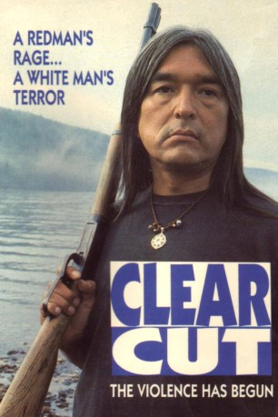

#3414 Die Rache des Wolfes
 
 IMDB-Wertung: 7.0 / 10
IMDB-Wertung: 7.0 / 10  Metascore: 0
Metascore: 0 
Der pazifistische Anwalt Peter verliert einen Prozess, den er im Namen der Indianer gegen eine Holzfabrik geführt hat. Der radikale Kahlschlag der Wälder in deren angestammten Wohngebieten geht weiter. Der Indianer Arthur sinnt auf Rache und entführt den Manager der Holzfabrik. In der kanadischen Wildnis beginnt ein Kampf ums Überleben.
Jahr: 1991
Dauer: 93 Minuten
FSK: 16
Land: Kanada Studio: Edel Media & EntertainmentTonspuren: DD2.0 - ,
Untertitel:
Auflösung: 720p (1280x544) Größe: 2600 MB
Genre: Thriller, Drama, Western
Regisseur: Ryszard Bugajski
Drehbuch: Robert Forsyth, M.T. Kelly
Soundtrack: Shane Harvey
Darsteller:
 Graham Greene als Arthur
Graham Greene als Arthur Ron Lea als Peter Maguire
Ron Lea als Peter Maguire Michael Hogan als Bud Rickets
Michael Hogan als Bud Rickets Floyd 'Red Crow' Westerman als Wilf
Floyd 'Red Crow' Westerman als Wilf- Tom Jackson als Tom Starblanket
 Michael J. Reynolds als Hunter
Michael J. Reynolds als Hunter Raoul Max Trujillo als Eugene
Raoul Max Trujillo als Eugene- Rebecca Jenkins als Louise
- Therry Bannon als Sweat Lodge Singer #2
 John Boylan als
John Boylan als - Harvey Churchill als Sweat Lodge Singer #1
- Phil Harns als Policeman
- Michael Millar als News Cameraman #1
- Steve Mousseau als Nasty Cop
- Andrew Proctor als Regional Police Officer #1
- Jari Sarkka als Regional Police Officer #2
- Tia Smith als Polly
- David A. Sutton als Pilot
Datei: X:\HD-Western-1980-1999\Rache des Wolfes, Die (1991, FSK16, 1280x544).mkv seit 03.04.2016
Festplatte: HD Eastern+Western
 Es gibt insgesamt 29 Filme in der Gruppe 'HD-Western-1980-1999'
Es gibt insgesamt 29 Filme in der Gruppe 'HD-Western-1980-1999'